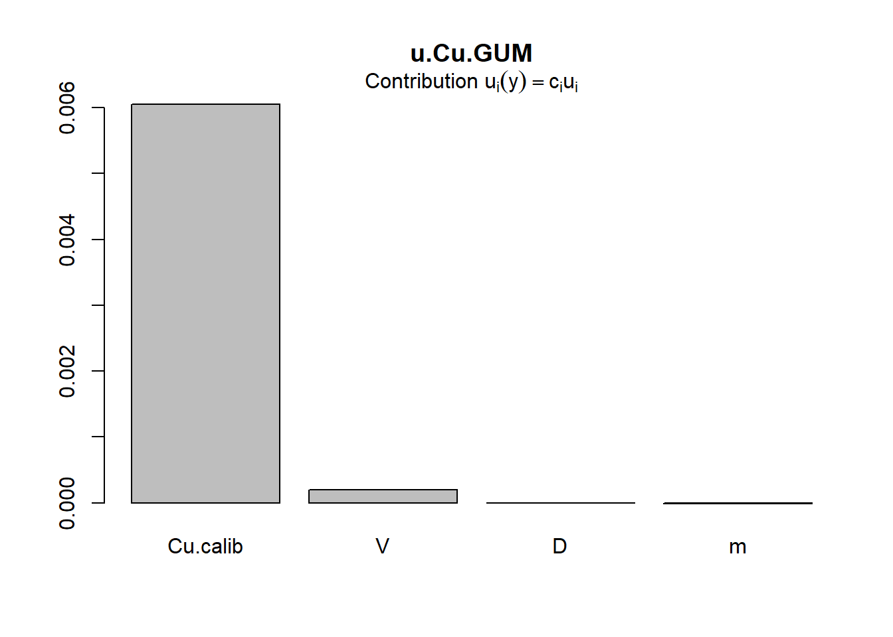

| Componente | Valor | u | Unidades |
|---|---|---|---|
| Concentracion calibracion | 13.82 | 0.24 | ug/mL |
| Volumen aforo | 250.00 | 0.14 | mL |
| Masa muestra | 0.99160 | 0.00005 | g |
Validación de los cálculos de incertidumbre en química analítica con el método Monte Carlo. Parte II
En el post anterior describimos brevemente en qué consiste el método de Monte Carlo y cómo utilizarlo para estimar la incertidumbre de medición. Finalizamos comparando la estimación de acuerdo a la guía GUM con el método de Monte Carlo siguiendo estrictamente las directrices del test de diferencias numéricas propuesto por el Suplmento 1 de la GUM.
Llevamos a cabo el test de validación “a mano”, es decir, ingresamos todas las instrucciones en código R. Si bien no fue difícil, existen librerías especializadas en R que permiten realizar todos los cálculos de incertidumbre y validarlos utilizando funciones ya incorporadas.
En Rexisten dos librerías especializadas en cálculo de incertidumbre de métodos de medición físico-químicos:
metRologydesarrollada en conjunto entre los Institutos Nacionales de Metrología del Reino Unido (LGC) y de Estados Unidos (NIST). Es mantenida por Steve Ellison, el autor de la guía GUM. Puede encontrar más información aquí.propagatedesarrollada por Andrej-Nikolai Spiess
Me inclinaré por metRology principalmente porque tiene el soporte de los dos centros de metrología más imporantes a nivel mundial y, ya que fue desarrollada en sus inicios por Steve Ellison, tiene un pequeño sesgo hacia la metrología química.
Ejemplo de validación de cálculos con librería metRology
Desarrollaremos un ejemplo más extenso sobre cálculo de incertidumbre en química analítica utilizando esta librería. Iremos paso a paso, cualquier duda en la implementación nada más escríbala en los comentarios más abajo. Sin embargo, no detallaremos cómo obtener las incertidumbres de cada uno de los factores involucrados en la ecuación de medición, sino que simplemente será un dato conocido para este ejemplo. En un futuro post, desarollaremos un ejemplo completo de principio a fin, por ahora nos centraremos en utilizar metRologycomo herramienta práctica.
En este ejemplo, calcularemos la incertidumbre de un método de determinación de cobre en mineral de cobre, con digestión ácida y cuantificación mediante espetroscopía de abosrción atómica AAS. Los detalles del método analítico están fuera del alcance de este post, pero pueden ser consultados en la norma chilena NCh 3392:2016.
Seguiremos estrictamente las directrices de la GUM, por lo tanto, queda fuera de esta evaluación cualquier corrección de sesgo y/o recuperación. La discusión sobre si se debiera, o no, incorporar el sesgo en la incertidumbre es un tema que abordaremos en otro post.
- El primer paso para estimar la incertidumbre de este método es escribir la ecuación de medición:
\[\begin{equation} \text{Cu}[\text{%}]=\frac{\text{C}_{\text{calib}}\cdot V \cdot D}{m\cdot 10000} (\#eq:medicion) \end{equation}\]
donde \(\text{C}_{\text{calib}}\) es la concentración de la muestra digerida interpolada en la curva de calibración \([\mu\text{g}\,\text{mL}^{-1}]\), \(m\) es la masa de la muestra [g], \(V\,[\text{mL}]\) es el volumen del aforo final y \(D\) es un factor de dilución volumétrico, utilizado cuando es necesario. Para simplificar el problema, asumiremos que no hay dilución antes de la lectura por AAS, por lo tanto, \(D = 1\) y \(u_{D} = 0\).
- Identificación de las fuentes de incertidumbre
A continuación se enumeran las fuentes de incertidumbre asociadas a cada uno de los factores de la ecuación @ref(eq:medicion) y se describe brevemente los métodos estadísticos y de juicio experto utilizados para obtener las incertidumbres estándar correpospondientes:
- \(\text{C}_{\text{calib}}\): La incertidumbre estándar de la concentración de una muestra problema \(u_{\text{C}_\text{calib}}\) obtenida de una curva de calibración lineal \(y = a + bx\) es calculada a partir de la siguiente expresión:
\[\begin{equation} u_{\text{C}_{\text{calib}}}=\frac{s_{y/x}}{b}\sqrt{\frac{1}{m}+\frac{1}{n}+ \frac{(C_{\text{calib}}-\overline{C})^2}{\sum(C_{i}-\overline{C})^2}} \label{eq:ucurva} \end{equation}\]
donde \(s_{y/x}\) es la desviación estándar de la regresión, \(m\) es el número de replicados independientes de la muestra problema efectivamente analizados, \(n\) es el número de calibrantes, \(C_{\text{calib}}\) es la concentración de la muestra problema obtenida por interpolación en la curva de calibración, \(\overline{C}\) es el promedio de la concentraciones de los calibrantes. Estos parámetros pueden ser obtenidos directamente del análisis estadístico de la curva de calibración lineal. Cabe destacar que cuando se utiliza el método de mínimos cuadrados ordinarios para estimar la pendiente e intercepto de la curva, esta metodología no incorpora la incertirtumbre de la concentración de los calibrantes.
{{% callout warning %}} Puede profundizar sobre la incertidumbre de calibración en el siguiente post{{% /callout %}}
\(V\): La incertidumbre del volumen de aforo \(u_{\text{V}}\) es estimada a partir de la combinación de tres fuentes:
\(u_{\text{tol}}\) La incertidumbre informada por el fabricante en el certificado original del lote de producción o aquella impresa en el material de vidrio. Esta incertidumbre es de Tipo B.
\(u_{\text{rep}}\) Incertidumbre debido a la repetibilidad de llenado del aforo del material de vidrio. Esta incertidumbre (Tipo A) es evaluada mediante métodos estadísticos a través de la replicación (\(n\)) del llenado del material con agua destilada y el registro gravimétrico de la cantidad de agua. La incertidumbre estándar se expresa como la desviación estándar de los \(n\) replicados.
\(u_{\text{temp}}\) La incertidumbre debido a la diferencia de temperatura registrada durante la calibración del material de vidrio y aquella que se registra durante los análisis de rutina. Esta incertidumbre expandida es expresada en la ecuación @ref(eq:uvol):
\[\begin{equation} U_{\text{temp}}= V\cdot \gamma_{\text{H}_{2}\text{O}} \cdot \Delta T (\#eq:uvol) \end{equation}\]
donde \(V\) es el volumen certificado del material de vidrio, \(\gamma_{\text{H}_{2}\text{O}} = 2.1\cdot 10^{-4}\,\text{°C}^{-1}\) es el coeficiente de expansión del agua y \(\Delta T\) es la variabilidad de la temperatura de trabajo del laboratorio en relación a la tempreratura de calibración del material. Finalmente, se obtiene asume una distribución rectangular de la variable obteniéndose una incertidumbre estándar \(u_{\text{temp}}=U_{\text{temp}}/\sqrt{3}\) mL.
Esta expresión debe utilizarse cuando exista un certificado de calibración que informe la temperatura de referencia registrada durante el proceso de certificación el cual puede provenir del mismo fabricante o de alguna institución metrológica nacional que certifique este tipo material. Generalmente la temperatura de calibración se espcifica a 20°C.
La incertidumbre combinada estándar del volumen del aforo se obtiene a través de la siguiente expresión:
\[\begin{equation} u_{\text{V}} = \sqrt{u_{\text{tol}}^2+u_{\text{rep}}^2+u_{\text{temp}}^2} \end{equation}\]
- \(m\) : La incertidudmbre de la masa de la muestra es obtenida directamente del certificado de la balanza emitido por el nodo de metrología física nacional u otro proveedor de calibración.
- Cuantificación de los componentes de incertidumbre
Como mencionamos anteriormente, no llevaremos a cabo la estimación de incertidumbre de cada uno de lo componentes, sino que asumiremos que estos datos ya están disponibles. Dedicaremos otro post a desarrollar un ejemplo completo de principio a fin.
- Cálculo de la incertidumbre combinada total
Aplicando las directrices de la GUM y en base a la ecuación de medición @ref(eq:medicion), la incertidumbre estándar de la concentración de Cu por este método analítico es obtenida a partir de:
\[\begin{equation} u_{\text{Cu}} = \text{Cu}\sqrt{\left(\frac{u_{\text{C}_\text{calib}}}{\text{C}_{\text{calib}}}\right)^2+ \left(\frac{u_{\text{m}}}{m}\right)^2+ \left(\frac{u_{\text{V}}}{V}\right)^2} (\#eq:ufinal) \end{equation}\]
La tabla @ref(tab:udata) muestra las incertidumbres estándares de cada uno de los componentes de la ecuación @ref(eq:ufinal):
Ok, vamos entonces a utilizar la librería metRology para evaluar la incertidumbre del % de Cu.
{{% callout warning %}} Debe, en primer lugar, instalar la librería mediante el comando install.packages('metRology'){{% /callout %}}
Una vez instalada debe ingresar el siguiente código R:
library(metRology) # Carga la librería metRology
# Ingresar los valores de cada variable input (Tabla 1)
Cu.calib <- 13.82 # Concentración interpolada en la curva de calibración [ug/mL]
V <- 250 # Volumen de aforo [mL]
m <- 0.9916 # Masa de la muestra [g]
D <- 1 # Factor de dilución (D = 1 implica no hay dilución)
# Ingresar las incertidumbres estándar de cada variable input (Tabla 1)
# Se mantienen, obviamente, las mismas unidades
u.Cu.calib <- 0.24
u.V <- 0.14
u.m <- 0.00005
u.D <- 0
# Ingresamos la ecuación de medición y la guardamos con el nombre C.Cu
# mediante el comando 'expression'
C.Cu <- expression(Cu.calib*V*D/(m*10000))
# Guardemos en una lista los valores de cada variable input, la llamaremos
# x.Cu
x.Cu <- list(Cu.calib = Cu.calib, V = V , D = D, m = m)
# Guardemos en un vector las incertidumbres estándares de cada variable input
# ¡¡en el mismo orden que fueron ingresadas en x.Cu!!
# Llamaremos a este vector u.x.Cu
u.x.Cu <- c(u.Cu.calib, u.V, u.D, u.m)¡Estamos listos! Ahora metRologyhará todo el trabajo con el comando uncert, Ud. debe elegir cuál método de estimación desea utilizar, las opciones son:
- GUM
- Monte Carlo
- Kragten: Método numérico basado en una aproximación de las derivadas parciales propuestas por GUM. Es una excelente alternativa y muy sencilla de implementar en Excel también.
- NUM y k2 son otras aproximaciones numéricas de derivadas parciales.
- Cálculo de incertidumbre de acuerdo a GUM:
# Ingresamos ¡en este orden! los siguientes parámetros del comando uncert
# Ecuación de medición C.Cu
# Lista de valores inputs x.Cu
# Vector de incertidumbres estándar u.x.Cu
# ¿Con cuál método quiere calcular la incertidumbre? En este caso GUM
u.Cu.GUM <- uncert(C.Cu, x.Cu, u.x.Cu, method = 'GUM')La información que entrega uncertes muy completa, sin embargo, para nuestro propósito sólo debemos fijarnos en el resultado que aparece al final del análisis, es decir: \(y = 0.3484268\) % Cu y \(u(y) = 0.006054\) % Cu.
Uncertainty evaluation
Call:
uncert.expression(obj = C.Cu, x = x.Cu, u = u.x.Cu, method = "GUM")
Expression: Cu.calib * V * D/(m * 10000)
Evaluation method: GUM
Uncertainty budget:
x u c u.c
Cu.calib 13.8200 0.24000 0.025211779 6.050827e-03
V 250.0000 0.14000 0.001393707 1.951190e-04
D 1.0000 0.00000 0.348426785 0.000000e+00
m 0.9916 0.00005 -0.351378363 -1.756892e-05
y: 0.3484268
u(y): 0.006053998 Además de los cálculos de incertidumbre, la opción method = 'GUM' entrega 4 gráficos muy interesantes, siendo el más importante el de Contribuciones combinadas, el cual se muestra en la figura @ref(fig:plotGUM). En este gráfico queda en evidencia que el factor que más aporta a la incertidumbre total (evaluada por GUM) es la curva de calibración.

- Cálculo de incertidumbre de acuerdo a Monte Carlo:
Esencialmente es el mismo comando que utilizamos para GUM, sólo que seleccionaremos method = 'MC'. Sin embargo, este método tiene varias opciones adicionales muy interesantes:
Con la opción
distribUd. puede asignar a cada variable su respectiva distribución de probabilidad: Normal, uniforme, triangular o Student. Por defecto, asume que todas son normales.Con la opción
Bindica el número de simulaciones. Por defectoB = 200. Le sugiero cambiar aB = 10000.
# Guardaremos los cálculos en el objeto u.Cu.MC
set.seed(123) # Sólo para que Ud. obtenga los mismos resultados
u.Cu.MC <- uncert(C.Cu, x.Cu, u.x.Cu, method = 'MC', B = 10000)El método de Monte Carlo entrega el siguiente análisis:
Uncertainty evaluation
Call:
uncert.expression(obj = C.Cu, x = x.Cu, u = u.x.Cu, method = "MC", B = 10000)
Expression: Cu.calib * V * D/(m * 10000)
Evaluation method: MC
Budget:
x u c u.c distrib
Cu.calib 13.8200 0.24000 0.025211842 6.050842e-03 norm
V 250.0000 0.14000 0.001393355 1.950696e-04 norm
D 1.0000 0.00000 NA NA norm
m 0.9916 0.00005 -0.351680471 -1.758402e-05 norm
distrib.pars
Cu.calib mean=13.82, sd=0.24
V mean=250, sd=0.14
D mean=1, sd=0
m mean=0.9916, sd=5e-05
y: 0.3484268
u(y): 0.006046603
Monte Carlo evaluation using 10000 replicates:
y:
Min. 1st Qu. Median Mean 3rd Qu. Max.
0.3252 0.3444 0.3484 0.3484 0.3525 0.3720 El MMC obtiene \(y = 0.3484268\) % Cu y \(u(y) = 0.0060466\) % Cu.
La tabla @ref(tab:comparacion) muestra la comparación de ambas aproximaciones en la estimación de la incertidumbre estándar:
| Método | Valor calculado | u |
|---|---|---|
| GUM | 0.3484268 | 0.0060540 |
| Monte Carlo | 0.3484268 | 0.0060466 |
Note la excelente concordancia entre ambas metodologías para esta ecuación de medición asumiendo una distribución normal para todas las variables inputs. En este caso, muy particular, casi sería innecesario validar el método GUM, pero lo haremos de todas maneras para ejemplificar la operación.
Validación de los cálculos GUM con el método de Monte Carlo
En el post anterior hicimos el test de validación numérica “a mano”, en esta oportunidad utilizaremos el comando GUM.validate. Lamentablemente este comando tiene una forma distinta de ingresar los parámetros, nada del otro mundo, pero es distinta a uncert:
# Si bien GUM.validate tiene muchas opciones, utilizaremos aquellas
# que están por defecto en la librería
# Guarde en un vector el nombre de las variables, cada una entre ' '
variables <- c('Cu.calib', 'V', 'D', 'm')
# Guarde en un vector x.i los valores de la variables input en el
# mismo orden que ingresó 'variables' arriba
x.i <- c(13.82, 250, 1, 0.9916)
# Guarde en un vector u.i las incertidumbres estándar de las variables
# input, en el mismo orden que ingresó 'variables' arriba
u.i <- c(0.24, 0.14, 0, 0.00005)
# Guarde los grados de libertad de cada variable input como nu.i.
# En este ejemplo asumiremos que todas tienen infinitos grados de
# libertad (nu = 9999)
nu.i <- c(9999, 9999, 9999, 9999)
# Seleccione que tipo de método utilizó para evaluar cada una de las
# incertidumbres: Tipo A o tipo B. En este caso sólo la incertidumbre
# de calibración u.Cu.calib es de tipo A.
type <- c('A', 'B', 'B', 'B')
# Seleccione que distribuciones de probabilidad asignó a las variables
# input. En este ejemplo, asumiremos que todas son normales
distribution <- rep('Normal', 4) # Repetir Normal 4 veces (soy muy flojo)
# Guarde la ecuación de medición entre ''
ec_de_medicion <- 'Cu.calib*V*D/(m*10000)'Listo, ahora validemos los cálculos GUM con el comando GUM.validate:
set.seed(126) # Tu ya sabes
GUM.validate(var.name = variables,
x.i = x.i,
u.i = u.i,
nu.i = nu.i,
type = type,
distribution = distribution,
measurement.fnc = ec_de_medicion)[1] 0.958“Bueno ¿Y?” se preguntará Ud.
Bien, para validar el método GUM frente a Monte Carlo, fíjese en el valor que entrega GUM.validate = 0.958 y compárelo con 0.95. Si el valor de GUM.validate \(> 0.95\) entonces el método GUM queda validado.
En el fondo, GUM.validate evalúa si el intervalo de incertidumbre calculado por GUM alcanza o no la cobertura esperada del 95% (teórica).
Resumiendo
El método de Monte Carlo funciona en casos donde las suposiciones del método GUM no se cumplen, especialmente en ecuaciones de medición no lineales.
Mientras más divergencia de la linealidad tenga el modelo de medición, más discrepancias habrá entre ambos métodos.
Es posible que cuando incorpore distribuciones rectangulares (uniformes), el histograma de los valores de Monte Carlo esté dominado por este tipo de distribuciones. Verá un achatamiento del histograma.
Ya hablamos que la pureza química (al menos para compuestos muy puros \(> 95\%\)) no es correcto modelarla mediante una distribución Normal (¿\(99.7 \pm 0.5\) %?), sino con una Beta. Lamentablmente, la librería
metRologyno posee esta distribución en sus opciones y tendrá que hacer la simulación “a mano”.En general para distribuciones de Monte Carlos muy asimétricas (como la pureza química modelada con Beta), la diferencia entre MC y GUM se verá reflejada en la incertidumbre expandida y no en la estándar.
Quedan muchas cosas por analizar del método de Monte Carlo, sin embargo, el espíritu de este post es divulgar a la comunidad químico-analítica esta poderosa herramienta más que entrar en los detalles teóricos.
Usamos el lenguaje
Rporque es actualmente el idioma oficial de la estadística. Sin embargo, Ud. puede implementar estos cálculos en cualquier lenguaje e incluso en Excel. Además, existen muchos otros softwares que, aunque no tan flexibles y potentes comoR, harán el trabajo. Revise la siguiente lista en Wikipedia.
Espero que este post haya sido de su agrado, todos los comentarios son bienvenidos. Hasta la próxima.
Bibliografía
Evaluation of measurement data – Guide to the expression of uncertainty in measurement JCGM 100:2008
Evaluation of measurement data – Supplement 1 to the “Guide to the expression of uncertainty in measurement” – Propagation of distributions using a Monte Carlo method JCGM 101:2008
Stephen L R Ellison metRology: Support for Metrological Applications R package version 0.9-23-2, 2016.